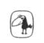

URSULA K. LEGUIN
EN UZAK SAHİL
Yerdeniz III
Çeviren:
ÇİĞDEM ERKAL İPEK

Metis
LEGUIN KOLEKSİYONU
MÜLKSÜZLER 1991
ROCANNON'UN DÜNYASI 1995
BALIKÇIL GÖZÜ 1995
DÜNYAYA ORMAN DENİR 1996
BAĞIŞLANMANIN DÖRT YOLU 1997
UÇUŞTAN UÇUŞA 2004
DÜNYANIN DOĞUM GÜNÜ 2005
İÇDENİZ BALIKÇISI 2007
LAVINIA 2009
RÜYANIN ÖTE YAKASI 2011
Yerdeniz
YERDENİZ BÜYÜCÜSÜ 1994
ATUAN MEZARLARI 1995
EN UZAK SAHİL 1995
TEHANU 2000
ÖTEKİ RÜZGÂR 2004
YERDENİZ ÖYKÜLERİ 2001
Batı Sahili Yıllıkları
MARİFETLER 2006
SESLER 2008
GÜÇLER 2009
KADINLAR RÜYALAR EJDERHALAR 1999